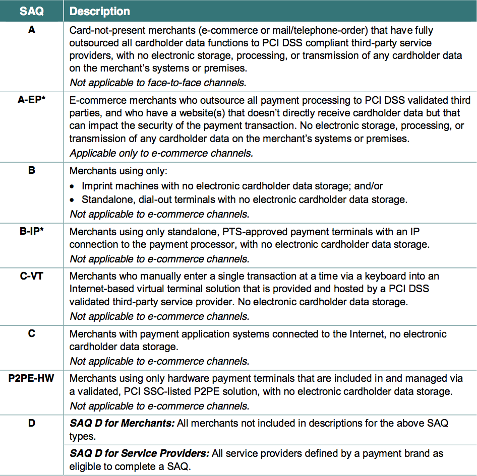
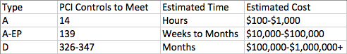
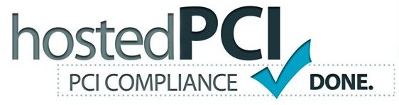
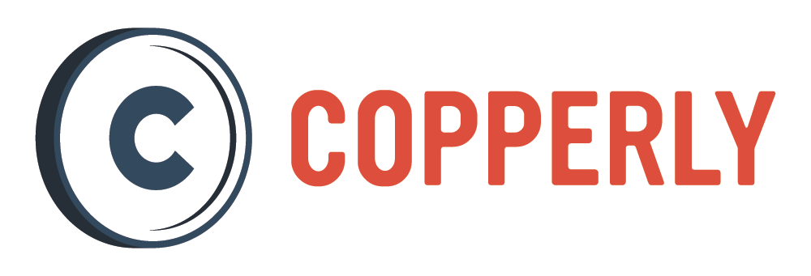

Authors:
v1.1
July 15th, 2014
Updated to PCI-DSS 3.0
This document provides a high level overview regarding Payment Card Industry Data Security Standard (PCI DSS) compliance specifically for Drupal eCommerce solutions. The intended audiences include: Drupal developers; companies providing Drupal products, services, and hosting; and businesses evaluating Drupal as part of their eCommerce solution. Goals of this document: to emphasize the importance of PCI compliance; to summarize the options available in becoming and maintaining compliant; to provide clear next steps and additional resources.
eCommerce volume continues to grow by double digit percentages each year1 as more and more businesses are supplementing their existing revenue models and/or creating new streams 2,3. Simultaneously, Drupal has seen a 21% rise in the number of reported eCommerce installations in 2013 across its very large installation base 4.
Drupal is an attractive eCommerce platform for many reasons: Its Open Source licensing eliminates one time and recurring costs to own and use, it is extremely modular and flexible, and it has a large, passionate, and world wide community that is continually contributing to and growing the platform. The Drupal community also makes a concerted effort when it comes to ensuring the platform is secure. There is a security team, weekly security advisories, venues to discuss security best practices, a collection of tools to help detect security vulnerabilities, and many other security focused strengths. The result is that Drupal is one of the most secure content management and eCommerce solutions available to merchants today.
However, while it is possible to make a Drupal-based eCommerce environment PCI DSS compliant through proper planning, usage, maintenance, and management, the mere use of Drupal by itself is IS NOT sufficient to ensure the level of security necessary to become compliant. First, it’s possible to make Drupal insecure through the use of inappropriate configurations and site mismanagement. Second, Drupal is only a single component of the cardholder data environment (CDE). Hosting servers, networks, and other factors play a significant role in securing the entire end-to-end process.
How and where the credit card data is processed, transmitted, and stored determines the size, complexity, and risk associated with the cardholder data environment, which directly impacts the time, resources, and expertise required to achieve and maintain compliance. Whenever possible, wholly-outsourced and shared-management implementations can make it easier to complete this process. Merchant-managed solutions are the most cost prohibitive for all but enterprise level companies, and should be avoided unless the business needs require them.
Regardless of the selected approach, it’s always necessary to adhere to the complete PCI DSS standard because a single exploit can undermine a company's PCI compliance, opening the company up to the financial and legal liabilities associated if the exploit where to be breached. Finally, the standard is becoming more stringent with each new version; therefore, what is optional today is likely to become a requirement in the near future.
The following terms are used extensively throughout this document and are provided here for convenience.
A full list of definitions can be found in the PCI document titled Glossary of Terms, Abbreviations, and Acronyms 5.
PCI compliance is important for the industry as a whole as well as companies specifically using Drupal as part of their eCommerce solution. Here are several key areas to underscore the recommendation and requirement to adhere to PCI compliance.
Online credit card transactions have become so common and accepted in our society that it's easy to forget what is at stake. When a thief goes after physical credit cards the amount of financial loss is limited in size and quantity because each card has to be stolen one at a time. However in the case of electronic payments, a single computer hacker can potentially breach multiple websites with the same exploit and steal hundreds, thousands, or even millions of credit cards. The financial loss by the number of people affected in a website compromise can be staggering.
While these scenarios do in fact happen, their frequency is far outweighed by the volume of transactions that are handled securely. This is in part because of the set of security standards set forth by the Payment Card Industry. When properly applied, the risk level for transactions goes down significantly, which leads to more consumer trust in merchants, the process, and the industry as a whole can continue to expand. However, if this trust is broken, consumers will lose this confidence and seek other merchants and means of payment.
A merchant's ability to accept card payments is a privilege, not a right. The Payment Card Industry has established a system of payment that is convenient for consumers and business owners who choose not to deal in checks and cash. It is their system and they get to set the requirements. Anyone accepting online payments must sign a contract and/or accept a terms of use agreement that explicitly states the merchants responsibility to adhere to these requirements (unfortunately this isn't always emphasized in the sign up process, so be sure to read through the fine print). Therefore, simply installing a Drupal site to accept credit card payments doesn’t mean you have established the proper means of doing so.
Every component between a customer’s browser window and the payment processor makes up the Cardholder Data Environment (CDE). If one only focuses on securing a single component, the weakest link in the chain can be the source of an exploit. Therefore it’s not enough to simply secure Drupal. The PCI standard provides guidance on how to make sure all components are secured.
Author's Note: It's important to note that ALL systems connected to the same network that's behind the same stateful firewall as the eCommerce server are also considered part of the CDE. Therefore, a common strategy is to segment the network such that only the eCommerce relevant components are together in a carefully protected network, thus reducing the overall scope for PCI DSS compliance.
It’s not common for one company to control the entire end-to-end process of handing a credit card transaction. Therefore, it’s important to know how exactly how these companies distribute the responsibility as well as liability for ensuring this process is secure.
If you ever face a security breach and credit card information is stolen, having a proven record of your PCI compliance can protect you from the financial penalties (ranging from $25 to $215 per compromised card6). Major corporations, such as Heartland Payment Systems, have faced fines as large as $12.5 million7. Target attributed a portion of its 5.3% loss in sales and a 46% drop in profit during the 4th quarter of 2013 to its security breach in November of that year, which resulted in 40 million compromised credit card records8. Small companies are equally at risk, accounting for 80% of all instances of unauthorized access9. Finally, any company that has a reported breach on their record must undergo mandatory Report On Compliance audits, which alone can cost tens of thousands of dollars.
Beyond the financial burden of dealing with a breach, the loss of trust for a company's website, business, and brand can be staggering. The Sony PlayStation breach put more than 77 million credit card numbers at risk 10. The ramifications of alerting a user base and requiring that many users to change their cards and/or put a freeze on their credit cards can quickly lose current and future customers. These transactions can also impact customer credit scores if they unknowingly overdraft or miss a payment they were not expecting.
While developers and businesses may see this standard as a nuisance, it’s important to realize that these standards allow this industry as a whole to provide the level of security and trust necessary to keep it growing. The PCI DSS should be considered a baseline, minimal level of security for sites handling sensitive information - your site very well may need security controls that exceed this standard. Also adhering to the standards helps ensure protection for the business (legal, PR, and financial), as well as your customers (legal, financial).
Note: This paper specifically excludes PA-DSS because Drupal is Open Source Software and (whether right or wrong) falls outside the PA-DSS standard.
The PCI-DSS standard covers 12 requirements across 5 overarching categories11. Rather than restate what is already provided in the materials from the PCI council, the focus here is to specifically identify why each requirement directly affects the security of Drupal within the context of a complete CDE.
The integrity of a Drupal code base can only be maintained if access to the server is restricted and protected by a stateful firewall. A lax or nonexistent firewall policy provides more ways for an attacker to find a vulnerability, gain access to the server, and modify the code on the system, which opens the door for harvesting credit card numbers.
This should be obvious, but any component of your system that has a known default password can be vulnerable if it’s not reset immediately. A Drupal specific example is the Commerce Kickstart installation profile. By default, it sets the main administrator username and password to “admin.” This should only be used for testing/evaluation purposes and should never be used for a live site.
Ideally credit cards are not being stored on a Drupal website at all. If they are stored, they must be encrypted (e.g. using a hardware security module or an encryption key management solution) in such a manner that anything with access to the database, server, or network cannot decode the information in a manner that is not intended. Achieving this is non-trivial and should only be attempted after gaining close familiarity with the PCI SAQ D standard (see the section Self-Assessment Questionnaire for definitions of the SAQ validation types).
The data leaving the Drupal application travels through many routers and networks on the way to the payment processor. Unencrypted data would allow any component along that path to copy cardholder data and other sensitive information. Therefore, encryption with a trusted SSL certificate is a requirement.
If malware is installed on a server running Drupal, it can be difficult or impossible to verify the integrity of the codebase, which opens the door for access to credit card data.
It’s simply not enough to “set it and forget it” when it comes to all components of the CDE. A single discovered vulnerability at the network, server, and/or Drupal app layer has the potential for exploitation. Drupal security advisories are posted every Wednesday and should be watched regularly for any updates affecting Drupal core and/or contributed modules a site is using. Likewise, critical operating system and support software (Apache, PHP, MySQL, and other server software.) patches must be applied within 30 days of release.
This requirement impacts not only application design, but also account and server management. For example, the server that houses your eCommerce site should not be used as a place where anyone can connect via FTP using a shared password and upload photos from the company picnic. Any one of those individuals’ machines could be used to gain authorized access to the CDE code base and/or card data itself.
Sharing usernames and passwords leaves less detail for actions occurring for each individual user. It also generally leads to other bad practices, such as creating weak passwords and sharing them over insecure channels like email. Never share your “user 1” or root login information between staff.
Similar to Requirement 1, access to the server must be protected at all times. If a person without proper clearance can physically access a server, they can potentially gain root/administrator access and compromise the database and Drupal application layer. If you outsource hosting, ensure the provider is PCI DSS compliant.
Audit trails are critical for identifying changes in the system because a single code or configuration alteration can open up a security vulnerability. Having the ability to identify exactly what changed and who changed it is very important for verifying the integrity of a system.
It’s not enough to have a system that works in theory. Periodic vulnerability scans full penetration tests are necessary to prove that the system responds as expected. These tests have to be run regularly (at least quarterly) and are ideally run whenever there is a configuration or code change that could introduce a new vulnerability. Ensure you are using an officially Authorized Scanning Vendor (ASV) as listed on the PCI site12.
All the hardware testing, security scans, and audits in the world will not help if people are allowed to use insecure passwords or send full credit card numbers via unencrypted channels like email. The human element is often the weakest link in the security chain. A security policy is required to ensure ALL employees know and understand what is acceptable and what is not with respect to maintaining compliance.
Knowing how to get started can seem overwhelming at first. Thankfully, the PCI council has provided detailed reference guides and instructions13. All of these materials culminate to your Self-Assessment Questionnaire. This form is essentially a checklist that you must complete and adhere to in order to obtain and maintain PCI compliance.
Your credit card processor and acquiring bank are required to ask you for annual SAQ forms - if they haven’t asked yet, they will soon!
The key is determining which SAQ you should be filling out because they vary wildly in terms of quantity of responsibilities and the amount of time and effort it takes to complete them. SAQ A has 14 items and usually can be completed in under a day if not within a couple of hours. SAQ D contains between 326 and 347 items and can take months of time and millions of dollars to achieve14. The following section will help you make sense of these different levels and how you can select the method that balances your business needs with your ability to achieve compliance.
The quantity and difficulty of your PCI responsibilities are a result of your merchant level (which is based on the volume of transactions) and your validation type (which is based on how you’re conducting transactions).
The PCI council has defined 4 levels of transaction volume (Figure 1)
Figure 1. The 4 levels of transaction volumes for VISA card brand. Other card brands (e.g. MasterCard, American Express.) have different reporting and validation requirements. Image Source http://usa.visa.com/merchants/risk_management/cisp_merchants.html
There are a few important points to emphasize for the Visa card brand:
The PCI council defines 8 different validation types:

Figure 2. Breakdown of PCI-DSS version 3.0 SAQ types as a function of merchant activities.
For the purposes of a typical Drupal eCommerce site, the SAQ A, A-EP, and D are the most relevant typesA, B. It is also extremely important to understand which type the system falls into because there is a large difference in time, effort, risk, and expense in achieving compliance.

Figure 3. Approximate PCI compliance costs per SAQ type. Factors include audits ($30,000-$100,000), time spent meeting each requirement, and more.
For many eCommerce stores, selecting a payment method that places them in type C or D can be cost prohibitive. However, achieving SAQ A or A-EP is not always possible given the available payment gateway options that can satisfy a business's feature requirements, which drives the expansion or reduction of the CDE and ultimately determines the validation type.
The shopping cart selected (Drupal Commerce, Ubercart, Pay, Stripe, etc) and the payment method within that shopping cart (hosted payment page, direct post, iframe, onsite.) are usually the most significant factors in expanding or reducing the CDE, which directly impacts the SAQ type. Here are some situations that may force one into SAQ D:
The PCI council defines 3 types of payment methods: Merchant-managed, Shared-management, and Wholly-outsourced.
A general guideline is that if the company’s servers store, transmit, or handle cardholder data, then it’s merchant managed. An example would be customer submitting a payment directly on a Drupal site using Ubercart connected to Authorize.Net because a customer’s payment information passes through the merchant’s webserver on the way to being sent to Authorize.Net. It does not matter if the merchant is storing the data on their servers, since a hacker could gain access if they were able to compromise the server.
Onsite payments posted directly back to Drupal (i.e. an HTTP POST request containing the cardholder data is submitted to the Drupal application, which results in a bootstrap and the passing of the cardholder data through the form API) immediately fall into SAQ D.
Merchant-managed examples:
In a shared-management approach, the credit card information never touches the server that is running the Drupal application. This is generally accomplished by one of 3 approaches:
A HPP approach is where a user is redirected from a Drupal site to a third-party site in order to enter their payment details. If the transaction is successful, the customer is redirected back to the Drupal site with the payment authorization details. Depending on the specific payment gateway's security requirements, these payment authorization details may get sent back to the payment gateway's API to further validate the payment.
Example HPP solutions:
A direct post approach is where the customer remains on the website, but their card data is submitted directly from the customer’s browser to the payment gateway and a response is sent directly back to the customer with a one time authentication code or "token" that is then used by Drupal to immediately communicate with the payment gateway's API to validate the payment. There are two flavors of direct post: setting an HTML form's action attribute to a 3rd party API endpoint or achieving the same with Javascript.
Example direct post solutions:
An iframe approach is where the payment details portion of the checkout form is loaded through an iframe directly from the payment processor. Similar to a direct post strategy, an iframe gives the customer the impression they are always on site while the credit card details are sent directly to the payment gateway.
Example iframe solutions:
The common denominator in all shared-management configurations is that the checkout process begins on Drupal website (a component of the CDE) managed by the merchant, but the customer is technically sending their credit card credentials directly to the payment processor’s CDE. This occurs by redirection (HPP), loading a payment form from their servers (iframe), or posting the form directly through JavaScript or the action attribute on an HTML form (direct post).
One might assume that a shared-management approach would qualify them for SAQ A. However, section 3.4.3 in the PCI DSS eCommerce Guidelines Supplement document makes it clear that each shared-management method has vulnerabilities 15, which are described in more detail below. Furthermore, Understanding the SAQs for PCI DSS v3.0 (in addition to the SAQ A and SAQ A-EP v3.0 forms) specifically states that Direct Post and Hosted Payment Page solutions cannot qualify for SAQ A and must use SAQ A-EP16.
Frustrating as this may be for those wanting to achieve PCI SAQ A, the good news is that using a direct post or hosted payment page solution can still qualify as SAQ A-EP, which is much easier to achieve in comparison to SAQ D because a significant amount of the responsibility can still be considered outsourced.
In a wholly outsourced solution, everything regarding the Drupal application is hosted, managed, and under the responsibility (emphasis added) by a third-party vendor. Please note that most hosting services and Drupal vendors do not explicitly take on that responsibility, so be sure to do your due diligence and ensure that they are equally aware of the repercussions of taking on that responsibility. If the third-party vendor does take on that responsibility, you may be eligible for completing SAQ AD.
Version 3.0 eliminated much of the confusion that existed in version 2.0 with respect to selecting the appropriate SAQ form for each shared-management solution. Previously, one could formulate a strong argument for SAQ A, SAQ C, or some arbitrary hybrid of the two. And given the large difference in the implications for each SAQ type (see Figure 2), it was difficult to confidently make a final determination about each of these shared-management solutions. SAQ A-EP not only introduced a middle ground, but the requirements for SAQ A and SAQ A-EP made it clear with respect to which solution was appropriate for each—iframe methods are compatible with SAQ A while direct post and hosted payment page methods are not.
The decision to allow iframe solutions into SAQ A is not without controversy because the one can still make the case that a breach of the Drupal application layer can compromise the delivery of the iframe. Therefore, while the final recommendations of this paper are to use iframe solutions in order to fall within scope of SAQ A, it is also recommended to always comply with SAQ A-EP (at a minimum) for security reasons and to future proof your Drupal site against the next versions of the PCI-DSS standard.
There are other important changes introduced in the 3.0 standard, such as the requirement to have all components of the CDE documented with an explicit determination of responsibility for each component. Also noteworthy is that SAQ C is no longer applicable for eCommerce channels, which means that all merchant-managed solutions must comply with the more rigorous SAQ D. For a full list of changes, please see the Version 3.0 Change Highlights and Summary of Changes from PCI DSS Version 2.0 to 3.0 documents17,18.
SAQ A is obviously desirable and recommended because of its lower risk, time, and cost to implement. However, a company’s business needs may require a solution that is more customizable and that may rule out a wholly outsourced or even shared-management solution.
As of July 2014, there is no wholly-outsourced or shared-management solution for a Drupal 7 website using Ubercart with a recurring billing requirement. To store a customer’s credit card information directly on Authorize.Net’s servers, one must use the included Ubercart Authorize.Net module and enable the customer information manager (CIM) option. Unfortunately, the way Ubercart implements CIM requires the credit card information to pass through the Drupal application. Therefore this is a Merchant-managed solution, which requires one to adhere to every control item in SAQ D.
Author's Note: payment processors like Authorize.Net have the ability to use third-party iframes to integrate with their CIM service and adding this new functionality into the existing Ubercart modules (core or contrib) would make it significantly easier for merchants to achieve compliance. However, requests to add this functionality for Authorize.Net and other payment gateways have been made with no indication that they will be added to a development roadmap19.
One of the easiest ways to use a shared-management approach is to redirect to a hosted payment page. However, website owners are often resistant to doing this because customers are not always keen on being sent to a third-party site. Additionally, third-party HPPs are not always as customizable in terms of look and feel. Finally, HPP solutions are often more difficult to develop against because one needs to be developing on a public facing URL or IP address in order to get the response back appropriately.
With respect to direct post methods using JavaScript (JS), there is always the consideration that a user may have disabled JS by default and therefore be unable to enter a payment at all without prompting them to adjust their browser security settings.
There are considerations with respect to which shopping cart method to use (or continue to use) on top of Drupal. Drupal Commerce is much more popular for Drupal 7 and popularity brings more people to fix bugs and contribute modules. However, there is still a significant user base using Ubercart, and while Ubercart has far fewer shared-management payment gateway modules that are publicly available, there is nothing precluding the community from creating them in order to address the newer and more stringent PCI-DSS requirements. The possibility of additional costs to become compliant with Ubercart should be a consideration when evaluating the two solutions.
There are also other payment methods on Drupal, such as the stand alone Stripe and Pay modules, which offer a simpler and smaller feature set than Ubercart and Drupal Commerce and may be more appropriate for one time payment solutions.
There is no one-size-fits-all solution because each company will have to balance the resources available with becoming compliant with the features necessary for the business. However, there are some general recommendations that apply across the board. The first is to use Drupal Commerce over Ubercart because Drupal Commerce has more developer focus on it and has a more consistent code base. It also has more shared-management payment solutions, and that trend is likely to continue. Finally, whenever possible, use a shared-management solution (SAQ A-EP compatible) over a merchant managed solution (SAQ D required) in order to significantly reduce the number of potential security exploits as well as the amount of security controls one has to meet in order to achieve compliance. If available, select an iframe solution (SAQ A compatible) because it further reduces the number of requirements necessary for compliance. However, it's still recommended for those using an iframe solution to still to adhere to SAQ A-EP because it'll future proof the CDE as well as adhere to many best practices, which should be implemented regardless.
To further emphasize the importance of adhering to the PCI standard (for both merchant-managed and shared-management payment solutions), we created a list of the many ways in which a compromised website could be configured in order to steal cardholder data.
For specific ways that the Drupal application can be compromised, please visit DrupalSecurityReport.org.
This is a non-exhaustive list of ways in which you can harden security at the Drupal level.
The Drupal security team is a volunteer group of developers who are passionate about keeping Drupal secure. You can follow them by visiting http://drupal.org/security, subscribing to their RSS feeds, joining their group on groups.drupal.org, (see https://www.drupal.org/security-team for more information).
The security of a website largely depends on the quality of your work and your attention to detail. Whenever creating custom code, be sure that it complies with best practices. When using other people’s code, be sure to review it to ensure that it is also stable, secure, and community supported. When configuring a site, be sure to leverage modules like Security Review and Coder Review to ensure you are not accidentally opening up a security hole.
While you are not necessarily the one responsible for achieving and maintaining a site’s PCI compliance, you are responsible for educating yourself about it as well as notifying your employer and/or client when their decisions will impact the site’s overall security posture.
Your responsibility is to protect your business. It is up to you to be exceedingly clear with respect to who is responsible for PCI compliance before, during, and after a site launch. Any service agreements should also include language regarding each party's PCI-DSS compliance responsibilities as well as links to reference materials that provide clients with a means of understanding the implications of these responsibilities.
This conversation will ultimately lead to a greater focus on security for all delivered websites. This not only can be valuable upsell to current clients, but it can become a competitive advantage and even attract new business.
Finally, if you are a service provider that offers hosting or managed services for a site that handles credit cards and you agree to take on the PCI DSS responsibilities for your clients, you must comply with all PCI DSS requirements and complete SAQ D as a Service Provider, no matter what shopping cart solutions your clients have implemented.
Your decisions about how you handle credit card data affect the livelihood of your business. While achieving PCI compliance may seem cost prohibitive, the reality is that a security breach could potentially bankrupt a small- to medium-size business. Beyond that, the decisions you make also affect the credit of your customers because identity theft can cost thousands of dollars and take months to years to reconcile. Finally, there can be legal and PR consequences that occur as a result of a breach, further affecting your ability to sustain and grow your business.
Getting started can seem like a daunting task. However, breaking it down into small steps can make this a very manageable process.
At any stage, you also may wish to hire a professional to help expedite the process and ensure that your plan is sound. Specifically, you would want to locate a QSA (Qualified Security Assessor), which are organizations specifically “ordained” by the PCI Council to interpret and audit against the PCI DSS.
Author’s Note: This is a trimmed down summary from a longer article20.
This is incorrect by itself because Drupal is only one piece of the cardholder data environment (CDE). However, when Drupal is up to date with all of its security patches and when it’s configured properly to meet its portion of the PCI-DSS requirements, then Drupal is PCI compatible. PCI compliance can only be achieved at the CDE level once each component of the CDE has met all the requirements within their area of responsibility.
This is also incorrect in and of itself simply because it’s a component of a large system. However, the particular payment method chosen within each eCommerce solution can greatly influence how easy it is to become compliant.
Securing the transaction from the Drupal application to the payment gateway addresses only one of the 12 sections of the PCI standard. There are a significant number of other vulnerabilities that can exist at the server, network, and application level,
Storing the 3-4 digit security code is never allowed under any circumstances. Storing the full credit card number at the Drupal layer is extremely risky and should not be done without a considerable amount of attention and expertise.
This is false because modifying code at the Drupal application layer can result in a man in the middle attack, the introduction of a keylogger, and other exploits.
Shared hosting is simply not secure enough for PCI SAQ A-EP, C, or D because there are simply too many users (both customers and employees of the hosting company) that have access to the server and you simply do not have enough control in locking down the system. Technically an iframe solution (SAQ A compatible) could get by on shared hosting, but we strongly recommend against it.
As of July 2014, we are seeing a growing number of reputable hosting providers introducing PCI compliant cloud hosting options. However, you must do your due diligence before immediately accepting their claims. As part of the version 3.0 standard, each party must explicitly agree to the particular sections of the standard that they assume responsibility. Not only should the cloud hosting provider explicitly state that their solution is PCI compliant and they will assume the responsibilities within their jurisdiction, but the cloud hosting provider should also be able to provide documentation (upon request) to validate their claims.
Regardless of if you choose to use a cloud or dedicated hardware solution, you must us a PCI DSS certified service provider if you are outsourcing hosting for eCommerce servers.
PCI compliance is not a single event that is checked off a list and never revisited. Rather, it’s a continually changing state. If a security exploit is discovered and disclosed for Drupal or the OS running the server Drupal is hosted on, then your site is not PCI compliant. Therefore PCI compliance is a continual process that needs to be maintained through vigilance.
Drupal makes it trivial to get an eCommerce site up in minutes, PCI compliance can take months if not setup correctly. And while PCI compliance has many nuances and complexities, it’s a mandatory requirement for the 10’s of thousands of reported Drupal eCommerce installations. Small, incremental steps in learning and implementation are key in achieving and maintaining compliance, protecting your business, customers, and development.
AppliedTrust provides IT infrastructure, security, and opensource consulting services. The company serves clients in a variety of industries, including healthcare, financial services, recreation and government. AppliedTrust is a PCI DSS Qualified Security Assessor.

CARD.com creates Fair, Fashionable and Fun online payments solutions. CARD.com prepaid Visa cards are your connection to what you love. With FDIC insured accounts, ATM acces, smartphone apps and online tools to manage your account, CARD.com provides full service payment solutions. We are always looking for great brands with large communities looking to extend their connection via branded debit cards or other interesting ideas in the payments industry. Our team is growing, see CARD.com/careers.

CrossFunctional is a Sydney-based online solutions provider with proven expertise in Drupal, WordPress and other open source systems. In operation since 2008, we have grown to provide services at multiple levels and across multiple industries.

Commerce Guys is the software company behind Drupal Commerce, the eCommerce solution that capitalizes on the virtues and power of Drupal, the premier open-source content management system. We focus our knowledge and expertise on providing online merchants with the powerful, responsive, innovative eCommerce solutions they need to thrive.

We love web design, whatever you call it nowadays. UI/UX, interface design, you name it. Our clients are not just in Denver, CO, but also all over the USA; many are even overseas. We don't just make websites look pretty, though; we develop complicated websites in-house as well. Yes, we may well be the most established provider of Drupal web development services in Colorado.

Townsend Security creates encryption and key management solutions that help organizations meet compliance requirements and mitigate the risk of data breaches. Over 3,000 companies worldwide trust Townsend Security’s NIST and FIPS 140-2 validated solutions to meet the requirements in PCI DSS, HIPAA, FISMA, and other regulations. Learn more about Key Connection for Drupal or join our Drupal Developer program.
http://www.townsendsecurity.com

HostedPCI eliminates the risk associated with handling credit cards by delivering state of the art transaction processing technology that achieves 100% Continuous PCI Compliance, quickly and painlessly. HostedPCI allows merchants of any size to guarantee total protection against credit card theft for their online checkout, call center and mobile transactions.. It’s fast & easy to implement, and extremely cost-effective compared to traditional methods.

Copperly educates businesses in the Drupal community and beyond about cost-effective credit card processing options. We work with businesses to identify the pricing model and implementation best suited to their needs.
The authors of this paper would like to thank the following individuals for reviewing the paper and providing feedback to improve its accuracy and utility. In alphabetical order: Ryan Cross (rcross), Robert Douglass (robertdouglass), Trent Hein (thein), Michael Hess (mlhess), Dave Long (longwave), Ryan Szrama (rszrama), Peter Wolanin (pwolanin).
The following is a list of documents that can be found directly from the Official PCI Security Standards Council Site:
The authors are not lawyers and the contents of this document do not constitute legal advice. The authors are not responsible or liable for any loss or damages you and/or your business may incur as a result of reading this document. Everyone’s PCI compliance needs will be unique to their specific configurations and business needs. It is up to the reader to due their own due diligence and keep up with the latest information found at the PCI Security Standards Council Site.
This document is Copyright 2013-2014 Rick Manelius, Greg Knaddison, and Ned McClain—CreativeCommons Attribution-No Derivative Works 3.0 Unported http://creativecommons.org/licenses/by-nd/3.0 http://drupalpcicompliance.org/. You may share and re-post the PDF on other sites without modification as long as you clearly link to http://drupalpcicompliance.org/.